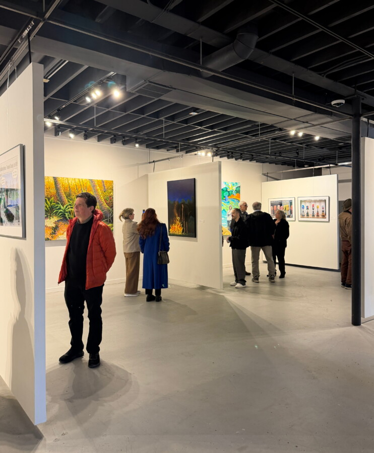

Closing Night Celebration for Without Permission
Closing Night Celebration for Without Permission
Join us for the closing night of Without Permission, featuring works by Paul Sierra, Kevin C. Lawler, and David Hauptschein, on Friday, May 29, from 6–10 PM.
The evening will include a special live performance by legendary actor Charles Pike, who will present David Hauptschein’s deranged and hilarious There’s a Worm in My Toilet — a true story. Special guest Max Fitzpatrick will open the night with a reading of his own short story.
The gallery opens at 6:00 PM for final exhibition viewing. Performances begin promptly at 8:00 PM and will run approximately one hour, followed by an open gathering until last call.
Without Permission
Closing Night Celebration
Friday, May 29, 2026
6:00–10:00 PM